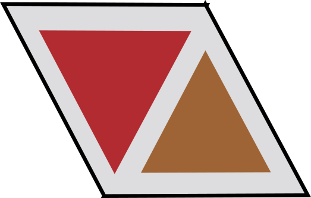
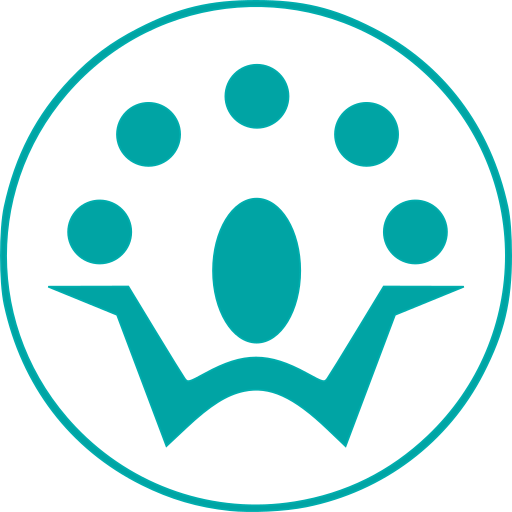

I'm a software engineer (primarily in the fields of full-stack and/or backend web development) with 5 years of experience in the industry.
I am currently based in Centurion, South Africa, and open to relocation or remote work. I aim to develop high quality software solutions, while improving
my technical and general skills. I work well independently, as well as in teams.
Experience
AWS - Software Development Engineer I
June 2022 - June 2024
Cape Town, South Africa
Developed internal tools for in-house cloud automation and bulk configuration updates.
Primarily used ReactJS + Cloudscape, with secondary backend stacks including Python, Java and Ruby.
Participated in on-call rotations to maintain system uptime,
quickly resolving configuration errors, performing rollbacks,
and addressing other critical issues.
Coordinated with international
teams based primarily in Seattle.
Made primary use of command line tools including ssh, jq, awk, and proprietary AWS tools.

VASTech - Junior Software Engineer
November 2021 - March 2022
Stellenbosch, South Africa
Developed internal tools for data visualization, documentation and automation.
Used GoLang and React to develop and maintain an in-house Grafana database plugin.
Developed an automated polling service in Java and ElasticSearch,
configurable to connect to arbitrary ES clients to connect to an arbitrary ES client,
check its space requirements and free up indices over time.
Used Java to develop a plugin that communicated with Confluence
and in-house DBs in order to generate documentation regarding the
states of various running in-house services.
Quant Engineering Solutions - Programmer
January 2019 - October 2021
Pretoria, South Africa
Developed new features, and maintained existing features for website instances (Tech Stack: Python, PostgreSQL and Javascript).
Designed dynamic medical forms using Jinja2 templates and LaTeX for rendering.
Gained CI/CD experience, including use of Git and development of unit tests.
Collaborated in small teams, reviewing pull requests and making change requests under Agile software methodology.
Investigated and fixed programming + data issues on live websites with ssh, psql and Docker.
Developed tools to automate and streamline development and debugging.
Documented and gave presentations on internal tools and processes.

Africlock - Electronic Equipment Developer
November 2017 - January 2018
Centurion, South Africa
Was tasked with researching electronic modules, to determine
whether an existing, discontinued electronic timer system could be
recreated at a substantially lower price, to return financial viability to
the product.
Designed a PCB layout, as well as an enclosure for the timer.
Developed both the hardware and firmware for a proof-of-concept
electronic timer. An Arduino microcontroller was used, along with
suitable electronic modules.
Education
BEng E&E - Stellenbosch University
January 2015 - December 2018
Stellenbosch, South Africa
Dissertation: Orbit Controllers for Solar Sailing Satellites
Developed an N-body physics engine in
Python, as well as visualizations in
Blender3D, and LATEX+ PGFPlots.
Included physics for traditional
thrust-based satellites, as well as solar
sailing satellites
Investigated and simulated the
behaviour behind solar sail orbit
transfers, developing two control
system approaches to achieve these
orbit transfers.